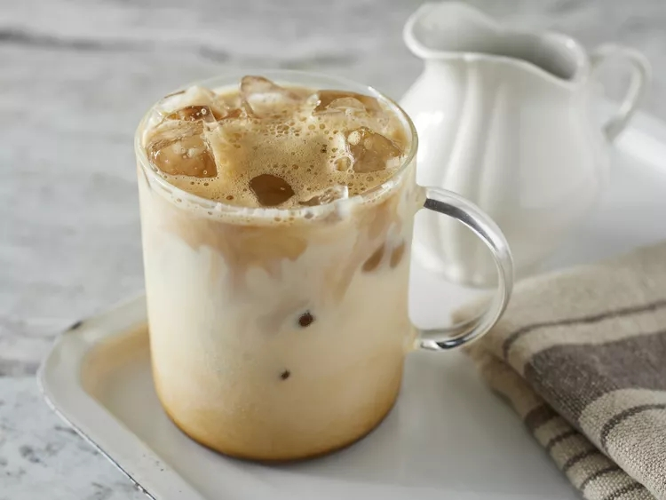

Go back
Iced Coffee

Description
Learn how to make iced coffee with this iced coffee recipe! We use instant
coffee in this cheater-version of iced cappuccino that's very easy to
make, and very nice to drink!
Ingredients
- 3 tablespoons warm water
- 2 teaspoons instant coffee granules
- 1 teaspoon sugar
- 1 cup ice, or as needed
- 6 fluid ounces cold milk
Steps
-
Combine warm water, instant coffee, and sugar in a sealable jar. Seal
and shake until foamy.
- Pour into a glass full of ice.
- Add milk. Adjust to taste if necessary.